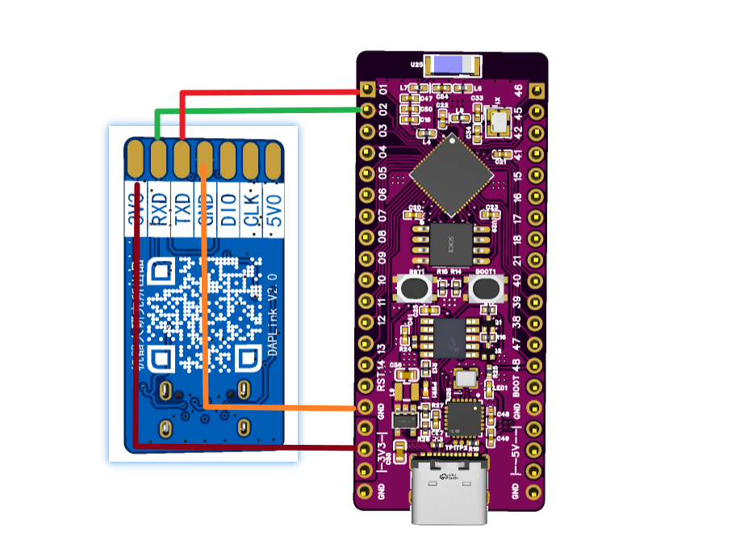

<!DOCTYPE lake>
<a class="yuque-card-link" href="https://player.bilibili.com/player.html?bvid=BV1choKYKEb4&amp;p=5&amp;page=5&amp;autoplay=0" rel="noopener noreferrer" target="_blank">thirdparty：thirdparty</a><p data-lake-id="ue1cd0f6e" id="ue1cd0f6e"><strong><span class="lake-fontsize-12" data-lake-id="u11deeee6" id="u11deeee6" style="color: rgb(64, 64, 64)">UART（串口通信）</span></strong><span class="lake-fontsize-12" data-lake-id="ubd710dcb" id="ubd710dcb" style="color: rgb(64, 64, 64)"> 是单片机最常用的数据传输方式，两个设备通过 </span><strong><span class="lake-fontsize-12" data-lake-id="u8e5976eb" id="u8e5976eb" style="color: rgb(64, 64, 64)">TX（发送）</span></strong><span class="lake-fontsize-12" data-lake-id="uc9e02158" id="uc9e02158" style="color: rgb(64, 64, 64)"> 和 </span><strong><span class="lake-fontsize-12" data-lake-id="ufe504d54" id="ufe504d54" style="color: rgb(64, 64, 64)">RX（接收）</span></strong><span class="lake-fontsize-12" data-lake-id="ufe50a220" id="ufe50a220" style="color: rgb(64, 64, 64)"> 两根线互相通信。发送方把数据拆成 </span><strong><span class="lake-fontsize-12" data-lake-id="uab703b22" id="uab703b22" style="color: rgb(64, 64, 64)">0 和 1</span></strong><span class="lake-fontsize-12" data-lake-id="u70fefc8b" id="u70fefc8b" style="color: rgb(64, 64, 64)"> 一位一位传过去，接收方按约定好的 </span><strong><span class="lake-fontsize-12" data-lake-id="ubb5f3e87" id="ubb5f3e87" style="color: rgb(64, 64, 64)">波特率（速度）</span></strong><span class="lake-fontsize-12" data-lake-id="uf814580c" id="uf814580c" style="color: rgb(64, 64, 64)"> 重新拼成完整数据。不需要时钟线，但双方必须设置相同的 </span><strong><span class="lake-fontsize-12" data-lake-id="u42507d12" id="u42507d12" style="color: rgb(64, 64, 64)">波特率、数据位、停止位</span></strong><span class="lake-fontsize-12" data-lake-id="u2a3519fe" id="u2a3519fe" style="color: rgb(64, 64, 64)">，否则会乱码。常用于 </span><strong><span class="lake-fontsize-12" data-lake-id="u5a1640fc" id="u5a1640fc" style="color: rgb(64, 64, 64)">调试、传感器、无线模块</span></strong><span class="lake-fontsize-12" data-lake-id="ubd28b62f" id="ubd28b62f" style="color: rgb(64, 64, 64)"> 等，简单又实用！ </span><span class="lake-fontsize-12" data-lake-id="u4b25e85f" id="u4b25e85f" style="color: rgb(64, 64, 64)">🚀</span></p><h2 data-lake-id="kr89j" id="kr89j"><span data-lake-id="u6c547e9c" id="u6c547e9c">串口初始化</span></h2><p data-lake-id="ud12ecf4d" id="ud12ecf4d" style="text-align: center"></p><p data-lake-id="u52b757a8" id="u52b757a8" style="text-align: left"><span data-lake-id="u1346d0a6" id="u1346d0a6"> ESP32-S3 有三个 UART控制器，即 UART0、UART1、UART2。</span></p><span class="yuque-card-unsupported">[codeblock]</span><h2 data-lake-id="tIxQt" id="tIxQt"><span data-lake-id="u86bfff03" id="u86bfff03">串口输出</span></h2><span class="yuque-card-unsupported">[codeblock]</span><h2 data-lake-id="kyUYk" id="kyUYk"><span data-lake-id="uf34597a8" id="uf34597a8">串口输入</span></h2><span class="yuque-card-unsupported">[codeblock]</span><p data-lake-id="ueb865cf5" id="ueb865cf5"><br/></p><h3 data-lake-id="snX08" id="snX08"><span data-lake-id="u1c436717" id="u1c436717">轮询方式-示例代码</span></h3><ol list="u757468e4"><li data-lake-id="u74e7e1d5" fid="uea708175" id="u74e7e1d5"><span data-lake-id="uf508bd5e" id="uf508bd5e">导包</span></li></ol><span class="yuque-card-unsupported">[codeblock]</span><ol list="u757468e4" start="2"><li data-lake-id="ubb6c181b" fid="uea708175" id="ubb6c181b"><span data-lake-id="ufe0448cf" id="ufe0448cf">初始化引脚</span></li></ol><span class="yuque-card-unsupported">[codeblock]</span><ol list="u757468e4" start="3"><li data-lake-id="ufa16c24c" fid="uea708175" id="ufa16c24c"><span data-lake-id="uaa733f45" id="uaa733f45">编写读取逻辑</span></li></ol><span class="yuque-card-unsupported">[codeblock]</span><h3 data-lake-id="oIJEr" id="oIJEr"><span data-lake-id="ue28e3ae2" id="ue28e3ae2">中断方式-示例代码</span></h3><ol list="u5fcf4db8"><li data-lake-id="u0977284c" fid="u1c3df69f" id="u0977284c"><span data-lake-id="ue71a0dcf" id="ue71a0dcf">导包</span></li></ol><span class="yuque-card-unsupported">[codeblock]</span><ol list="u5fcf4db8" start="2"><li data-lake-id="ufd66738d" fid="u1c3df69f" id="ufd66738d"><span data-lake-id="u9ae9e04c" id="u9ae9e04c">初始化引脚</span></li></ol><span class="yuque-card-unsupported">[codeblock]</span><ol list="u5fcf4db8" start="3"><li data-lake-id="u88dfd943" fid="u1c3df69f" id="u88dfd943"><span data-lake-id="u2c5b3be5" id="u2c5b3be5">编写中断处理逻辑</span></li></ol><span class="yuque-card-unsupported">[codeblock]</span><p data-lake-id="udac5b507" id="udac5b507"><span data-lake-id="u1c1916bd" id="u1c1916bd">​</span><br/></p><p data-lake-id="u3042a754" id="u3042a754"><span data-lake-id="u45dd007d" id="u45dd007d">​</span><br/></p><h2 data-lake-id="MDYkv" id="MDYkv"><span data-lake-id="u1fa2a728" id="u1fa2a728">连接STC8</span></h2><p data-lake-id="u0cbb8a5b" id="u0cbb8a5b"><span data-lake-id="u70bb0246" id="u70bb0246">TX-P3.0</span></p><p data-lake-id="u3074f4ab" id="u3074f4ab"><span data-lake-id="u17fc28a9" id="u17fc28a9">RX-P3.1</span></p>